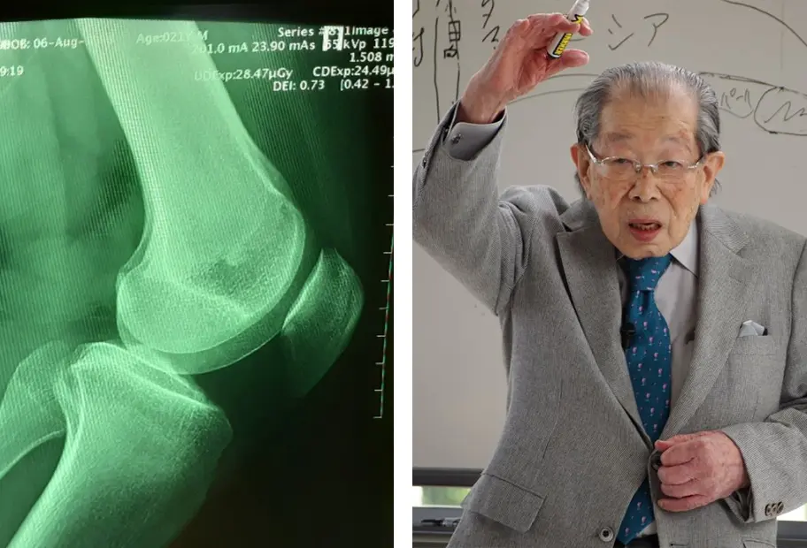
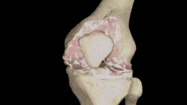

"I metodi di trattamento per le articolazioni utilizzati in Italia non sono adeguati." Un famoso reumatologo giapponese ha rilasciato un'intervista sincera a un media italiano.
Il Dr. Shigeaki Hinohara è il direttore del rinomato Centro di Reumatologia e Neurologia di Tokyo.
Esiste una sola causa per le malattie articolari, ma questa viene completamente ignorata dai medici italiani.
Dr. Shigeaki Hinohara: "In Italia, le malattie articolari vengono ancora trattate con farmaci antichi e inefficaci, che richiedono un uso continuo per tutta la vita. Nel frattempo, in Giappone, le articolazioni vengono trattate con la stessa facilità di un raffreddore."
Lo scorso anno, il Dr. Shigeaki Hinohara ha fatto un viaggio in Italia per conoscere l'esperienza dei suoi colleghi italiani. Secondo il Dr. Shigeaki, la reumatologia come scienza in in Italia ha smesso di svilupparsi dalla metà del secolo scorso.
Dopo aver rilasciato diverse interviste in Giappone, il Dr. Shigeaki Hinohara ha accettato di dare un'intervista al nostro media italiano. Che cosa non piace al famoso medico nella medicina italiana? E perché afferma che gli italiani che soffrono di problemi articolari non potranno mai essere curati?
In una conversazione con giornalisti giapponesi, ha detto che ciò che ha visto in Italia l'ha sorpreso. Può commentare?
Prima di tutto, voglio dire che amo molto l'Italia, la sua cultura e la sua gente. Ma lo stato della medicina qui ha davvero sorpreso i medici giapponesi. La medicina è arretrata di almeno 20, forse anche 30 anni. Almeno per quanto riguarda il trattamento delle malattie articolari e del sistema muscolo-scheletrico. Si potrebbe dire che in Italia la reumatologia non esiste come scienza.
Guardate cosa offrono i medici italiani per il trattamento delle articolazioni: Collagene Forte 2000, Crema Ibutop, Gel Voltaren Forte, Osteocare Original e altri prodotti simili.
Questi prodotti, tuttavia, NON CURANO LE ARTICOLAZIONI E LE CARTILAGINI, alleviano solo i sintomi della malattia: dolore, infiammazione, gonfiore. E ora immaginate cosa succede nel corpo. Quando si prende una pillola, si applica una crema analgesico o si fa un'iniezione, il dolore scompare. Ma non appena l'effetto del farmaco svanisce, il dolore ritorna immediatamente.
Il dolore, tuttavia, è un segnale importante che avverte di un processo patologico nell'articolazione. Alleviando solo il dolore, le articolazioni colpite subiscono più impatto. Il processo di distruzione si accelera da 3 a 5 volte e, alla fine, porta a cambiamenti irreversibili, immobilità totale e invalidità.
Questo metodo di eliminazione del dolore nelle articolazioni non viene utilizzato in Giappone da oltre 20 anni. I farmaci contro il dolore vengono utilizzati solo in casi estremi, molto raro e con molta cautela. In Giappone, vengono venduti solo con prescrizione medica e sotto stretta supervisione medica.
I cosiddetti "condroprotettori" sono completamente vietati come farmaci falsi e inutili.
I vostri medici e farmacisti stanno semplicemente mutilando le persone! È chiaro che è molto più vantaggioso vendere costantemente farmaci costosi per eliminare i sintomi piuttosto che curare la malattia una volta per tutte e ripristinare l'articolazione colpita, ma questo è terribile!
Come viene trattata l'articolazione in Giappone?
Tutti i medici giapponesi, dai professori di reumatologia ai medici generali, hanno compreso da tempo che non è necessario eliminare le conseguenze della malattia, ma le sue cause. Questo garantisce una cura completa, rapida e sicura. Qual è la principale causa dei danni alle articolazioni? È il deposito di cristalli nelle articolazioni dovuto a disturbi della circolazione sanguigna e del liquido sinoviale.
Gli urati sono sali di acido urico che causano la gotta.
Gli osteofiti, sali calcificati, sono la causa del restante 97% delle malattie articolari e della colonna vertebrale. Sono tutte le forme di artrite e artrosi, osteocondrosi, osteoporosi, reumatismo, borsite e persino igroma. Tutte queste malattie hanno una causa comune: il deposito di osteofiti.
I sali che si depositano sulla superficie delle articolazioni agiscono come abrasivi, consumando i tessuti circostanti: ossa e cartilagini. Man mano che i cristalli di sale crescono, iniziano a danneggiare i tessuti muscolari, i tendini, i vasi sanguigni e i capillari. Causano infiammazione, infezione, gonfiore e dolori intensi.
In casi avanzati, grandi accumuli di questi sali possono facilmente rompere una parte dell'osso durante un movimento improvviso, causando incapacità totale e immobilità permanente dell'articolazione.
È un errore molto pericoloso credere che il calcio sia benefico per le articolazioni. Sì, il calcio è benefico, ma solo per articolazioni SANE. Quando le articolazioni già fanno male o scricchiolano, significa che si è già formata uno strato di osteofiti, e il calcio, oltre a rafforzare il tessuto osseo, rafforza anche questi sali di osteofiti, peggiorando e accelerando la loro crescita.
Per questo motivo, i reumatologi giapponesi ripristinano principalmente la circolazione sanguigna nell'articolazione colpita, in modo che i sali accumulati nel corso degli anni vengano eliminati. Ciò, a sua volta, ripristina la normale circolazione del liquido sinoviale e inizia il processo di rigenerazione dei tessuti articolari.

In realtà, le articolazioni umane sono altamente rigenerative e possono ripararsi da sole, come la coda di una lucertola. Hanno solo bisogno di un piccolo aiuto per farlo: liberarsi dei sali "intrappolati" al loro interno, e il processo si attiverà.
Negli anni '90, gli scienziati svizzeri riuscirono a ottenere una forma speciale di quasi-vitamina B, chiamata alfa-artroferolo. Viene prodotto tramite la sintesi di ingredienti naturali: veleno di serpente, grasso di squalo e oltre 50 diversi estratti. Finora non esiste nulla di più efficace per attivare la circolazione sanguigna nelle ossa e nelle articolazioni. Si può immaginare la forza biologica di un tale meccanismo?
Questa sostanza è in grado di penetrare nelle molecole di sale e romperle dall'interno: di conseguenza, la superficie delle articolazioni viene pulita, il flusso sanguigno e la circolazione del liquido sinoviale vengono ripristinati. E questo per sempre! Più precisamente, fino a quando i sali si accumuleranno di nuovo (il che richiederà diversi decenni). Non è più necessario prendere COSTANTEMENTE FARMACI per alleviare il dolore e l'infiammazione. Non c'è bisogno di temere che un giorno un'articolazione "si paralizzi" permanentemente, diventi completamente immobile e necessiti di una protesi. Le persone restano completamente sane per decenni.
Quando ho visto le statistiche mediche italiane, sono rimasto sbalordito. Lei sa qual è la causa più comune di invalidità in Italia? Non è il cancro, l'AIDS o il diabete, ma l'artrosi! L'artrosi, che in Giappone viene trattata in 4 o 5 settimane con metodi relativamente semplici e accessibili, in Italia può richiedere anni e persino lasciare una persona disabile!
Attualmente, in Giappone, le malattie articolari non sono considerate patologie gravi, a meno che non ci siano danni traumatici gravi, come fratture o crepe. Il dolore e l'infiammazione nelle articolazioni indicano solo che stanno accumulando sali e devono essere pulite. Dopo un trattamento mensile di "pulizia", le articolazioni possono tornare alla normalità e si puo’ dimenticare questi problemi per molti anni.
In Italia, le malattie articolari, spesso trattate in modo isolato, sono state da tempo raggruppate in Giappone sotto la condizione chiamata "Shio no taiseki-mono" (deposito di sali nelle articolazioni). Questa condizione include:
- Gotta
- Artrite
- Artrosi
- Osteocondrosi
- Reumatismo
- Osteoporosi
- Borsite
- Igroma
Questa è una lista molto corta, ma le altre malattie sono semplicemente sottotipi di queste otto principali patologie. Ad esempio, la coxartrosi è un sottotipo di osteoartrite, e così via.
Tutta questa lista di malattie può essere trattata in modo molto semplice con una pulizia delle articolazioni. È completamente sicuro, non richiede assistenza medica e può essere effettuato a casa.
Come vengono "pulite" le articolazioni in Giappone?
Oggi esistono mezzi specifici destinati alla pulizia delle articolazioni dai depositi di sali. Contengono alfa-arthroferolo. Ad esempio, un rimedio molto efficace è Fortuflex. Contiene alfa-arthroferolo in una forma speciale, facilmente assorbibile, il che rende questo prodotto ancora più efficace.
Un altro importante vantaggio dell'Fortuflex è che contiene un complesso vitaminico di macro- e microelementi, progettato per migliorare la funzione dei tessuti articolari. In altre parole, ha un effetto globale sul tessuto osseo e cartilagineo, sul liquido sinoviale, sulle fibre muscolari, sui tendini e sui legamenti. Quindi ha un effetto ampio e versatile, è una crema straordinario.
Fortuflex contiene più di 50 componenti. Non li elencherò tutti, solo i principali:
Estratto di foglie di consolida maggiore - un efficace agente antireumatico. Allevia il dolore, migliora la mobilità articolare, riduce l'infiammazione e protegge dalla perdita di cartilagine. Inoltre, aiuta a mantenere livelli adeguati di colesterolo nel sangue e supporta la funzione cardiaca.
Olio di eucalipto agrumato - idrata, ammorbidisce le articolazioni, aumenta la forza e la flessibilità, migliora la consistenza del liquido sinoviale e previene la degradazione delle articolazioni. Fa funzionare correttamente le articolazioni senza dolore né attrito.
Olio di pisello comune - aiuta con il reumatismo, elimina depositi di sali e infiammazioni. Riduce il gonfiore delle articolazioni e allevia il dolore causato da alterazioni degenerative.
Estratto di semi di castagno - responsabile della rigenerazione e idratazione della pelle, supporta la guarigione dei tessuti connettivi, permette una cicatrizzazione più rapida delle ferite, elimina le cicatrici e contribuisce al processo di saldatura delle ossa.
Secondo le nostre informazioni, Fortuflex non è venduto nelle farmacie italiane.
Esattamente. I medici italiani spesso preferiscono prescrivere antidolorifici e condroprotettori in grandi quantità invece di praticare un trattamento efficace.
I reumatologi italiani, almeno quelli interessati ai trattamenti innovativi, probabilmente conoscono l'Fortuflex e le sue capacità rigenerative. Tuttavia, non osano prescrivere un prodotto che non è approvato dal Ministero della Salute.
Secondo le informazioni in mio possesso, il produttore di Fortuflex ha cercato di entrare nel mercato italiano. Tuttavia, si sono trovati di fronte a numerosi ostacoli (la burocrazia in Italia è nota per la sua complessità). È comprensibile: se questo prodotto fosse disponibile nelle farmacie, le farmacie italiane potrebbero affrontare grandi perdite. La farmacologia oggi è un business, anche in Giappone! Ma in Giappone, il business è regolato dallo Stato, e non giudico quello che succede in Italia; voi lo sapete meglio di me.
Gli effetti documentati del trattamento parlano da soli:
1 settimana: Sollievo immediato dal dolore e comfort rinnovato nella camminata
2 settimane: intensa rigenerazione della cartilagine e del liquido sinoviale; scomparsa della rigidità, del formicolio e del crepitio nelle ossa
3 settimane: 87% di rafforzamento di articolazioni, tendini e muscoli; riduzione del gonfiore e dell'infiammazione
4 settimane: superare l'artrite nelle articolazioni e nella colonna vertebrale; recupero del 100% della mobilità
Quale consiglio Lei darebbe agli italiani con problemi articolari?
Le persone comuni, specialmente quelle con più di 50 anni, affrontano maggiori difficoltà a causa dei ritardi nei trattamenti medici rispetto ad altre fasce d'età. Non è colpa loro, ma del sistema sanitario.
Fortunatamente, c'è una soluzione: è stato creato un sito web ufficiale speciale dove qualsiasi residente in Italia può richiedere Fortuflex con uno sconto incredibile.
Distribuiamo Fortuflex da tre mesi. Migliaia di italiani hanno già approfittato di questa opportunità. Abbiamo chiesto a tutti coloro che hanno ricevuto Fortuflex di valutare l'efficacia del prodotto su una scala da 1 a 10. Finora, oltre 3000 persone hanno partecipato al sondaggio e il punteggio medio del prodotto è 9,97 su 10.
Come vedete, Fortuflex ha aiutato l'50% di migliaia di italiani a recuperare la loro mobilità e a liberarsi dal dolore. Anche voi potete approfittare di questa offerta!
Quanto durerà lo sconto su questa fantastica crema?
Fino a esaurimento dello stock speciale. Tuttavia, sono rimasti pochissimi articoli. Gli ordini aumentano ogni giorno e il metodo del "passaparola" sta funzionando; le persone stanno condividendo le informazioni, raccomandando il prodotto agli amici e chiedendo informazioni per i loro cari. Non ci aspettavamo che le informazioni su Fortuflex si diffondessero così rapidamente in Italia.
Consiglio a tutti coloro che hanno problemi articolari di richiedere Fortuflex sul sito web e di approfittare dello sconto finché l'offerta è disponibile. E ricordate sempre che la nostra salute è la cosa più importante e preziosa che abbiamo.
Grazie, Dr. Shigeaki! Per i nostri lettori, abbiamo un'offerta speciale: con essa, il trattamento può essere ottenuto con uno sconto dell'50%.
Maria Rossi
Dr. Shigeaki, grazie mille per questo prodotto. Lo cercavo da molto tempo e non vedo l'ora di ricevere il mio pacco. Grazie!
un'ora fa
Anna Bianchi
Grazie al suo crema, mi sono curata dall'osteoartrite. Grazie infinite!
un'ora fa
Silvia Conti
Sono completamente soddisfatta! Questo è un prodotto efficace per i problemi articolari. I miei gomiti e le ginocchia non fanno più male.
un'ora fa
Gabriele Russo
Grazie per questo prodotto, Dr. Shigeaki! Sta aiutando molte persone nel nostro paese. Ho deciso di provare Fortuflex per la mia schiena. Ho l'osteocondrosi e ha davvero aiutato. Credo che ora andrà tutto bene!
un'ora fa
Dr. Shigeaki Hinohara
Gabriele, non preoccuparti e continua a usare Fortuflex, ma non dimenticare di seguire le istruzioni per l'uso di questa crema.
Cordiali saluti, Dr. Shigeaki.
un'ora fa
Angelo Romano
Qualcuno può aiutarmi? Sono stanco del mal di schiena. Non so più cosa fare. Sto prendendo vari farmaci e usando diversi crema, ma non aiutano per niente :(
un'ora fa
Camillo Santini
Angelo, compra Fortuflex e non te ne pentirai. Anch'io ho avuto problemi articolari fino al punto di non poter camminare. Fortunatamente, mia madre ha trovato questa crema e me l'ha dato. Lo ha comprato 6 mesi fa al prezzo originale (non credo fosse così alto). E ora non ho più problemi alle articolazioni. Posso muovermi normalmente. Credimi, è incredibile! Sono sicuro che ti andrà bene e puoi ottenerlo con l'50% di sconto.
un'ora fa
Natalia Ricci
Come posso ordinare la crema Fortuflex?
un'ora fa
Cristoforo Morelli
Natalia, ecco il link per il concorso ufficiale. Ti consiglio di affrettarti se vuoi ottenere uno sconto del 50%. Mi ha aiutato molto.
un'ora fa
Natalia Ricci
Grazie, Cristoforo. Ho appena fatto l'ordine. Quanto tempo ci vorrà per arrivare?
un'ora fa
Cristoforo Morelli
Natalia, circa 3 giorni :)
un'ora fa
Irene Galli
Ho ordinato questa crema due mesi fa per mia sorella, che soffriva di artrite da molto tempo. È stata molto grata quando l'ha provato. Sono davvero felice che l'abbia aiutata; alla fine l'ho comprato anche per me, per precauzione :)
un'ora fa
Martino Pellegrini
Irene, è davvero così efficace? Forse dovrei ordinarlo anch'io. Dopo tutto, è scontato dell'50%, giusto?
un'ora fa
Diego Ricci
Ho sentito parlare di questo prodotto da diverse persone. Un mio amico l'ha ordinato. Soffro di dolori alle gambe da due anni. A volte il dolore è insopportabile e i medici non sanno come aiutare. Ho deciso di ordinare Fortuflex. Lo proverò e vedrò come mi aiuterà.
un'ora fa
Valentino Perri
Sembra che molte persone abbiano problemi articolari. Un mese fa ho visto un annuncio di Fortuflex e mi ha aiutato a superare l'osteocondrosi più velocemente di molti altri prodotti.
un'ora fa
Bruno Galli
Qualcuno sa se questo aiuta davvero? Le farmacie e i medici non sono stati molto efficaci per me.
un'ora fa
Laura Bianchi
Bruno, sono sicura che ti aiuterà. È efficace e non ha effetti collaterali, quindi non esitare e fai il tuo ordine! Fortuflex mi ha aiutato a risolvere completamente i miei problemi alla schiena.
un'ora fa
Giulia Morelli
Grazie, Fortuflex mi ha aiutato molto. Non rimandare il trattamento. È meglio farlo ora che pentirsi amaramente più tardi.
un'ora fa
Silvia Rossi
Grazie, Dr. Shigeaki! Se non fosse per lei, non avrei creduto nell'efficacia di Fortuflex. Mio marito, che ha sofferto molto per 5 anni, ora corre come se avesse di nuovo 18 anni! Il pacco è arrivato anche molto velocemente.
un'ora fa
Dr. Shigeaki Hinohara
Silvia, sono felice di sentirlo. Per favore, fammi sapere quanto tempo ci è voluto per un recupero completo.
Cordiali saluti, Dr. Shigeaki.
un'ora fa
Silvia Rossi
Dr. Shigeaki, si è ripreso in circa un mese. Ora può muoversi liberamente e non si lamenta più come prima. Sono molto felice per lui.
un'ora fa
Dr. Shigeaki Hinohara
Perfetto. Grazie, Silvia.
Cordiali saluti, Dr. Shigeaki.
un'ora fa
Elena Romano
Il risultato ha superato tutte le mie aspettative, la sciatica è sparita per sempre! L'ho già ordinato anche per i miei amici. Uno di loro ha dolore alla schiena e l'altro ai gomiti.
57 minuti fa
Liliana Ferri
Ho appena partecipato al concorso...
Ho vinto uno sconto del 50%!
Ho lasciato il mio numero di telefono nel modulo d'ordine e dopo pochi minuti mi ha chiamato un operatore per confermare l'ordine. Da ora in poi voglio vivere senza dolore e godermi di nuovo le passeggiate :)
55 minuti fa
Eugenia Rossi
L'ho ordinato anche per me stessa. L'artrite mi ha tormentato terribilmente per diversi anni. Ogni volta che pioveva o cambiava il tempo, il dolore era quasi insopportabile. Fortuflex mi ha aiutato in poche settimane. Non pensavo nemmeno fosse possibile.
53 minuti fa
Paola Bianchi
Un nostro amico ha visto questa crema in farmacia per 99 €, quindi ho deciso di non comprarlo. Quando ho visto questa offerta, non ho esitato e ho fatto l'ordine. Sono pensionata e non ho molti soldi da spendere. Il mio ginocchio non fa più male, quindi ora posso lavorare in giardino senza problemi. Grazie!
48 minuti fa
Dr. Shigeaki Hinohara
Paola, abbiamo scoperto che alcune farmacie stanno vendendo questa crema. È triste vedere che guadagnano denaro su persone malate in questo modo. Inizieremo a monitorare più rigorosamente dove inviamo il nostro prodotto.
Cordiali saluti, Dr. Shigeaki.
36 minuti fa
Sofia Rossi
Fortuflex mi ha aiutato a liberarmi della gotta dopo un trattamento e ora lo tengo sempre a portata di mano per ogni eventualità.
36 minuti fa
Stefano Morelli
Mi ha aiutato molto. Se hai problemi articolari, non c'è nulla di meglio, credimi. Inoltre, la consegna è rapida. Il mio ordine è arrivato in soli 3 giorni.
39 minuti fa
Dr. Shigeaki Hinohara
Grazie, Stefano. Ci impegniamo a consegnare Fortuflex ai nostri clienti il più rapido possibile, affinché possano iniziare il trattamento immediatamente.
Cordiali saluti, Dr. Shigeaki.
36 minuti fa
Caterina Ricci
Ho letto l'articolo e ho deciso subito di ordinare questa crema con lo sconto per provarlo. Il racconto del Dr. Shigeaki mi ha ispirato molto. Il problema è che i prodotti comuni non mi aiutavano. I medici dicevano che l'artrite è difficile da trattare. Ora vorrei scrivere dei risultati del trattamento. Fortuflex è arrivato molto veloce. Dopo un solo uso, ho provato un sollievo così grande che ho deciso di condividere la mia gioia con gli altri. Sono entusiasta di poter vivere una vita normale di nuovo!
31 minuti fa
Daniela Bianchi
Qualcuno può dirmi dove posso acquistare questo prodotto? Non l'ho visto in farmacia e sono un po' preoccupata di acquistare online. Non vorrei comprare un prodotto contraffatto, perché capisco che non porterebbe a nulla di buono.
27 minuti fa
Dr. Shigeaki Hinohara
Ribadisco ancora una volta: puoi ordinare Fortuflex solo tramite il nostro concorso ufficiale. Per evitare malintesi, clicca semplicemente sul pulsante qui sotto. Voglio sottolineare che Fortuflex è disponibile con uno sconto fino all'50%, ma questa offerta non durerà a lungo, quindi affrettati!
Per favore, fai attenzione ai prodotti contraffatti.
Cordiali saluti, Dr. Shigeaki.
15 minuti fa